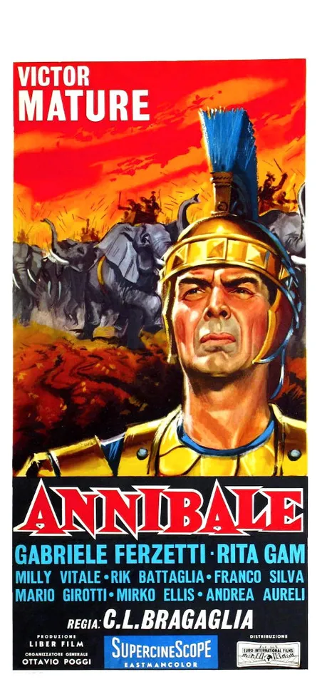

1959 · 32 tracce
Musiche di Carlo Rustichelli.
32 sequenze pubblicate. Escluse le quattro tracce bonus indicate dall’editore come take alternativi/non utilizzati. Entrambi gli attori sono nel cast, prima della nascita del duo.
Gli elenchi documentano le edizioni pubblicate; la presenza di ciascuna traccia nel montaggio del film non è certificata.
Brani e ascolti
- 01
Titles
1:58 - 02
Sequence 1
3:08 - 03
Sequence 2
0:56 - 04
Sequence 3
2:09 - 05
Sequence 4
1:14 - 06
Sequence 5
1:20 - 07
Sequence 6
1:01 - 08
Sequence 7
1:46 - 09
Sequence 8
1:36 - 10
Sequence 9
0:56 - 11
Sequence 10
1:40 - 12
Sequence 11
0:42 - 13
Sequence 12
2:03 - 14
Sequence 13
1:15 - 15
Sequence 14
1:13 - 16
Sequence 15
1:38 - 17
Sequence 16
3:31 - 18
Sequence 17
1:49 - 19
Sequence 18
1:28 - 20
Sequence 19
1:50 - 21
Sequence 20
1:01 - 22
Sequence 21
1:52 - 23
Sequence 22
1:34 - 24
Sequence 23
1:32 - 25
Sequence 24
2:02 - 26
Sequence 25
1:22 - 27
Sequence 26
2:56 - 28
Sequence 27
1:49 - 29
Sequence 28
2:07 - 30
Sequence 29
2:12 - 31
Sequence 30
2:13 - 32
Finale and Endtitles
2:01
Fonti e riferimenti
- Scheda del film e creditiConsultata il 3 ottobre 2026.
- Edizione e lista delle tracceConsultata il 3 ottobre 2026.
- Edizione digitale e ascoltiConsultata il 3 ottobre 2026.
- Locandina — AnnibaleConsultata il 3 ottobre 2026.